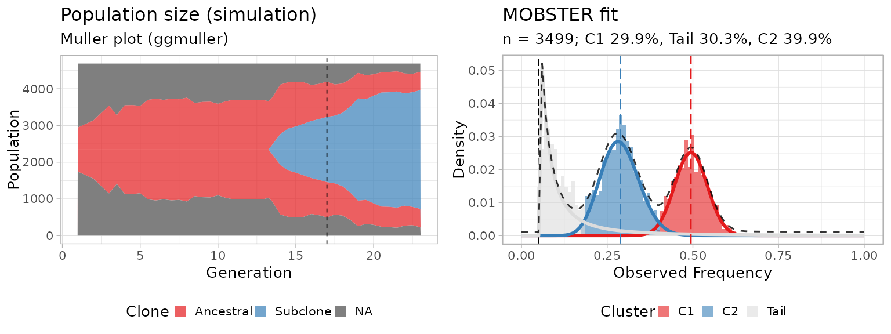

mobster implements a Dirichlet finite mixture model to
detect ongoing positive subclonal selection from cancer genome
sequencing data. The algorithm works best with high-resolution
whole-genome sequencing data (e.g., WGS >100x). The
models performs a deconvolution of the site/ allele frequency spectrum
of mutation data (the signal), and looks for models with
k+1 mixture components to fit the data (k
subclones).

The plot shows the fit (right) of a simulated subclonal expansion
(left, Muller plot with ggmuller);
C2, the subclone at ~30% allelic frequency is
outgrowing an ancestral clonal population C1, at
~50% allelic frequency (heterozygous mutations). Their
dynamics are consistent with what we expect
from the interplay of positive selection between clones and neutral
evolution within each clone.
Inspired from both mathematical modelling of evolutionary processes and Machine Learning, the signal is modeled as mixture density with two types of distributions:
-
kBetas to capture the peaks of alleles raising up in frequency in different clones (subclones enjoying positive selection, and the clonal cluster); -
1Pareto Type-I power law to model within-clone neutral dynamics, which is the distribution predicted by theoretical Population Genetics.
mobster fits can be computed via
moment-matching (default) or maximum-likelihood, the
former being much faster Model selection for the number of components
can be done with multiple likelihood-based scores such as the BIC, and
its entropy-based extensions ICL and reICL, a new variation to ICL with
reduced-entropy.
S3 objects are defined to perform easy visualization of the data and aid comparison of different fits; parametric and non-parametric bootstrap routines are also available to assess the confidence of each parameter (bootstrap quantiles) and the model (overall model frequency).
This is a model-based approach to analyse cancer data,
meaning that a power law tail is used to integrate evolutionary dynamics
in this traditional clustering problem. Results from
mobster deconvolution can be used to reconstruct the clonal
architecture of a tumour (subclonal deconvolution) and identify
patterns of functional heterogeneity (subclones under positive
selection).
A number of vignettes
are available to help you using mobster; for a set of real
case studies check out the Supplementary Data repository hosted at the
Sottoriva Lab Github
page